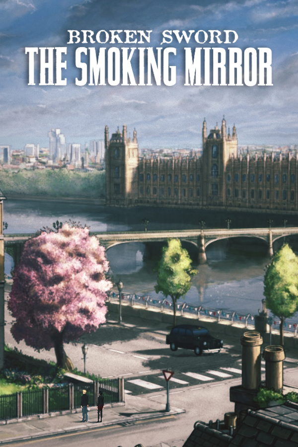

 |
|
| Tiempo de juego | 6s |
| Última actividad | 11/11/2025 7:30:10 |
| Añadido | 10/11/2025 17:49:12 |
| Modificado | 10/12/2025 11:26:37 |
| Estado de finalización | Jugado |
| Librería | Playnite |
| Fuente | |
| Plataforma | PC (Windows) |
| Fecha de lanzamiento | 1997 |
| Puntuación de la Comunidad | 82 |
| Puntuación de la Crítica | |
| Puntuación de usuario | |
| Género | Adventure Point-and-click Puzzle |
| Desarrollador | Revolution Software |
| Editor | Revolution Software |
| Característica | Single Player |
| Enlaces | Steam GOG |
| Tag | |
¿Pensaste que George Stobbart iba a poder tomarse unas vacaciones tranquilas? ¡Olvidate! Apenas un rato después de salvar al mundo de los Templarios, nuestro yanqui favorito vuelve a estar metido en un quilombo monumental.
Broken Sword II: El Espejo Humeante arranca con todo: George y Nico están visitando a un arqueólogo en París y ¡ZAS! Secuestran a Nico y dejan a George atado a una silla en una habitación en llamas con una araña venenosa. Sí, todo eso en los primeros 5 minutos.
Acá dejamos los castillos europeos y nos metemos de lleno en la mitología Maya y Azteca. El bardo gira alrededor de un antiguo dios, Tezcatlipoca (El Espejo Humeante), un eclipse zarpado y un cartel de droga en Sudamérica que está metido hasta las manos.
Una secuela con todas las letras. Mantiene la calidad, el humor y los personajes, pero te lleva a una aventura totalmente distinta. Si te copó el primero, este es obligatorio.